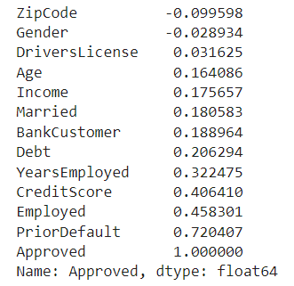
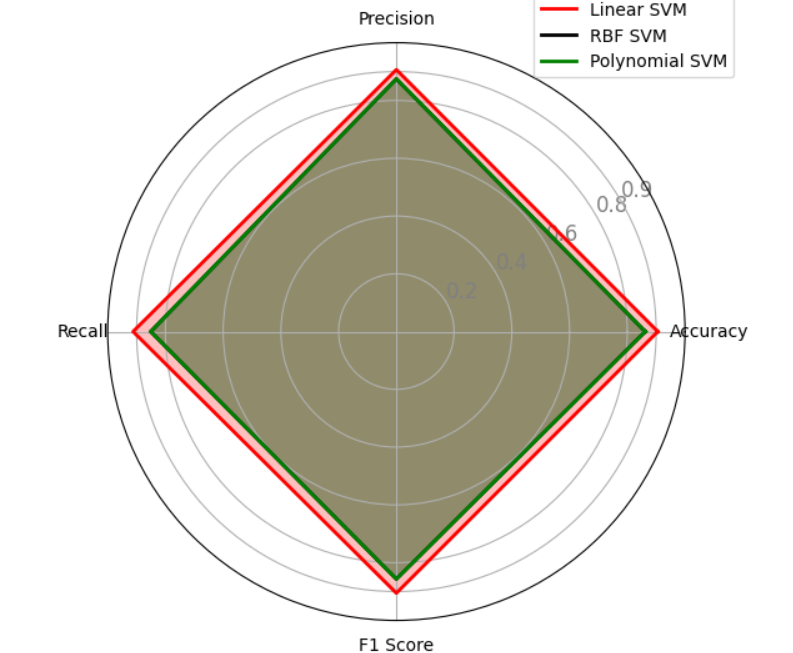

Credit Card Approval Automation using Support Vector Machines
Introduction
This project aims to automate the credit card approval process by using machine learning, specifically Support Vector Machine (SVM) algorithms, which are highly effective in classification problems. The dataset used in this project contains various features related to applicants' personal and financial details, and the goal is to predict whether a credit card application will be approved.
The entire process is divided into data preprocessing, training, and evaluation stages, leading to a fully functional
model for credit card approval automation. You can find the report here
Dataset Overview
The dataset consists of personal and financial features related to credit card applicants, such as:
- Categorical Features: Industry, Ethnicity, Citizen
- Numerical Features: Credit Score, Years Employed, Income, Debt, Age
- Target Variable: Approved (Yes/No)
Our goal is to build a predictive model to classify whether an applicant will be approved based on these features.
1. Data Preprocessing
Data preprocessing is critical to ensure that our model works with clean and well-formatted data. The steps include encoding categorical features, scaling numerical features, and selecting the most important features based on their impact on the target variable.
Key Preprocessing Steps:
- One-Hot Encoding: Converts categorical variables (like Industry, Ethnicity, and Citizen) into binary format.
- Feature Importance: Identifies the most relevant features using a Random Forest model.
- Scaling: Numerical features like Credit Score, Years Employed, Income, Debt, and Age are scaled using logarithmic transformation and Min-Max scaling.
Code Example for Preprocessing:
class DataPreprocessing:
def __init__(self, dataset_path):
self.dataset_path = dataset_path
def preprocess_data(self):
df = pd.read_csv(self.dataset_path)
df_encoded = self.OneHotEncoder_features(df)
df_features = self.feature_importance(df_encoded)
df_refined = self.select_features(df_encoded)
df_scaled = self.scaling(df_refined)
features = df_scaled.columns.tolist()
return(features, df_scaled)
Feature Importance Visualization:

The feature importance chart shows which features have the most significant influence on the credit card approval process. Features such as 'Prior Default', 'Credit Score', and 'Years Employed' play key roles in the prediction process.
2. Training the SVM Model
We used the Support Vector Machine (SVM) algorithm to classify applicants into approved and non-approved categories. SVM is ideal for this task because of its robustness in handling binary classification problems.
We implemented cross-validation to find the best hyperparameters (C, kernel, gamma) for the SVM model, ensuring that the model generalizes well to new data. Grid Search was used to fine-tune these hyperparameters.
Code Example for Model Training:
class Training:
def training_process(self):
df = self.data
mean_cv_score, X_train, X_test, y_train, y_test = self.cross_validation(df)
best_parameters, best_score, y_pred = self.linear(X_train, y_train, X_test, y_test)
print('The best parameters are:', best_parameters, 'The best score is', best_score)
return(X_train, X_test, y_test, y_pred)
def cross_validation(self, df):
X = df.drop('Approved', axis=1)
y = df['Approved']
svm_baseline = SVC(random_state=42)
cv_scores = cross_val_score(svm_baseline, X_train, y_train, cv=5)
return(cv_scores.mean(), X_train, X_test, y_train, y_test)
Cross-Validation & Hyperparameter Tuning:

The above figure shows the cross-validation results and optimal parameters for the SVM model, leading to improved accuracy in predictions.
3. Model Evaluation
After training the SVM model, we evaluated its performance using metrics such as Accuracy, Precision, Recall, F1 Score, and the ROC-AUC score. These metrics are vital to understand how well the model performs in classifying approved vs. non-approved applications.
Code Example for Evaluation:
class Evaluation:
def metrics(self):
accuracy = accuracy_score(self.y_test, self.y_pred)
precision = precision_score(self.y_test, self.y_pred)
recall = recall_score(self.y_test, self.y_pred)
f1 = f1_score(self.y_test, self.y_pred)
roc_auc = roc_auc_score(self.y_test, self.y_pred)
print(classification_report(self.y_test, self.y_pred))
return([accuracy, precision, recall, f1, roc_auc])
Performance Metrics Visualization:

The model achieved an accuracy of 85%, with a precision of 84% and recall of 82%, as indicated by the classification report and performance metrics. The ROC-AUC score indicates that the model is well-calibrated for the binary classification task.
Conclusion
This project demonstrates the power of Support Vector Machines in automating the credit card approval process. By carefully preprocessing the data, selecting important features, and tuning hyperparameters, we built a model capable of accurately predicting the approval status of credit card applications. Further improvements can be made by exploring additional models or feature engineering techniques.